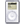

Subscribe to The Russell Heimlich Photocast

Episode 9 - Flowers and Plants
- August 7, 2006
- 1:34
- Music: “String Groove ” by A.B.E (Anthems of a Bygone Era)
-  Download iPod Version
- View on YouTube
Episode 8 - Philly
- July 31, 2006
- 2:30
- Philadelphia has been my home for the last three years. This city offers many interesting buildings and unique photo opportunities. I hope you enjoy looking at these photos as much as I did taking them.
- Music: “Pushing Back” by Empire Under Attack
- Download iPod Version
- View on YouTube
Episode 7 - Long Exposures
- July 24, 2006
- 2:18
- Long exposure photography can produce very interesting and unexpected results. It allows us to see things from the cameras point of view rather than what our eyes conventionally tell us.
- Music: “Roll Credits ” by Mercury Sol
- Download iPod Version
- View on YouTube
Episode 6 - The Wall House
- July 17, 2006
- 2:26
- The Wall House is the oldest house in Pennsylvania. As part of a class, it was our job to go on location and shoot video to document this historic building. I brought my camera along for a behind-the-scenes look at what we did.
- Music: “House In My Head ” by Josh Woodward
- Download iPod Version
- View on YouTube
Episode 5 - Amazing Circles
- July 10, 2006
- 3:09
- I stumbled upon an interesting Photoshop technique for creating what they call "Amazing Circles". I'll walk you through how to create one of these images in Photoshop.
- Step 1. Open up an image.
- Step 2. Select the square selection tool and be sure to set the aspect ratio to fixed.
- Step 3. Enter 1 and 1 in both fields.
- Step 4. Make a selection around an interesting area in the picture.
- Step 5. Go to Filter-> Distort-> Polar Coordinates. Make sure the bottom radio button, Polar to Rectangular, is selected.
- Step 6. Now rotate the image 180 degrees by going to Edit-> Transform -> Rotate 180
- Step 7. Let's apply the filter again go to Filter->Distort-> Polar Coordinates but this time make sure the upper radio button, Rectangular to Polar, is selected.
- Step 8. Finally crop and save.
- Music: “So Long” by Pilotdrift
- Download iPod Version
- View on YouTube
Episode 4 - Philly Snow
- July 03, 2006
- 2:07
- Since the start of summer it has been so hot. I needed something to help me think cool so I gathered some images from the first (and only) major snowfall in Philadelphia, this year.
- Music: “Tranquility” by Mark Heimonen
- Download iPod Version
- View on YouTube
Episode 3 - Biking at FDR
- June 26, 2006
- 1:40
- On October 7th, 2004, a group of friends and I embarked on a trip to FDR Skate park in South Philadelphia for a bike riding session. I was there to take photos, not ride to ride a bike, and I was really excited to experiment with action photography. No one got hurt and a good time was had by all.
- Music: "I Guess the Kids Are OK" by Coltrane Motion
- Download iPod Version
- View on YouTube
Episode 2 - Water
- June 19, 2006
- 1:40
- Water is a fun subject to photograph. Each shot is unique and offers its own form of beauty. My favorite shots of water appear to be frozen in time.
- Music: "Water" by Steve Robinson
- Download iPod Version
- View on YouTube
Episode 1 - Overview
- June 12, 2006
- 1:51
- Over the past 2 years I have taken many photos and I have decided to share them via this video podcast. The images in this episode are some of my favorites from my collection.
- Music: "Smooth Chilldown" by Kingkool68
- Download iPod Version
- View on YouTube